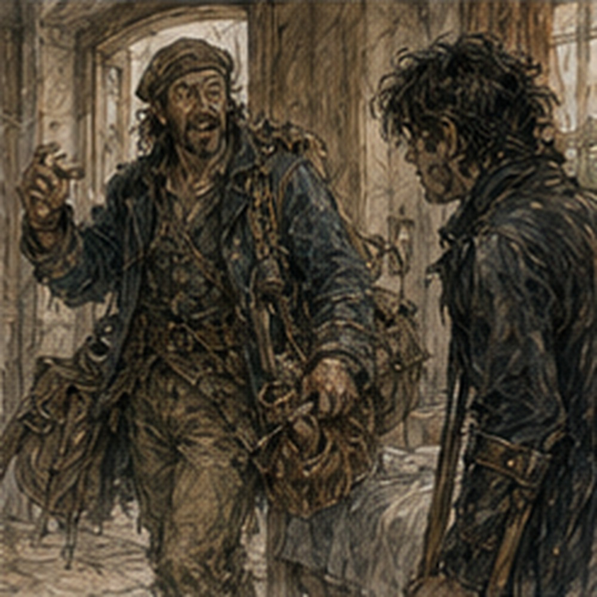
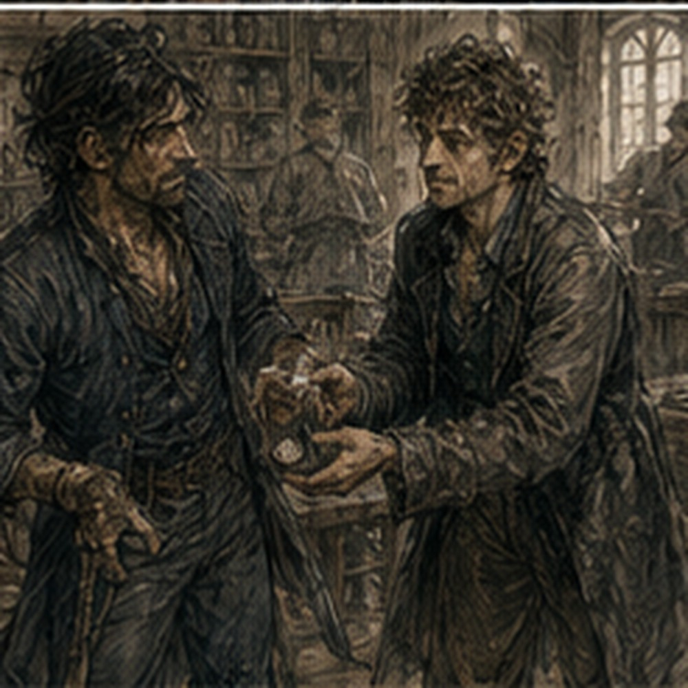

I woke because somebody was singing badly upstairs. Not loudly. That made it worse. A man's voice. Two lines. Pause. Same two lines. Wrong note in the same place every time. I lay on the cot and stared at the ceiling.
My room was above and slightly forward. The singer was farther back. Not in my room. Good. Why did I care? Because it was my room. Fine. The phantom foot was cold. The actual room was warm.
I pulled the blanket higher over a foot that did not exist. No effect. Excellent. Then the singer missed the note again.
“Commit,” I said to the ceiling.
He did not. Morning. No job. Good. I had meant it. Mostly. The keeper had left bread, cheese, and an apple in the kitchen. No eggs. I considered complaining. Then remembered I was not paying for breakfast service. I ate. My hands looked better under the wraps. Tender. No blister. Shoulders sore. Right thigh sore. Residual limb less angry than after West Spice.
Good. I had a wound check later. Not first thing. Sera had moved me to afternoon because the dressing was behaving. That felt like being promoted out of emergency. Not a real promotion. Still pleasing. The calendar sat on the crate.
SEE ALDEN.
Tomorrow. I had forgotten. No. Not forgotten. Stored. Different. I looked at the storage room. Cot. Crates. Mirror. Sword. Clothes. Bucket. Water. Temporary. The word had become less convincing through repetition. Dangerous. I stood. Crutches. Right foot. Kitchen. Stairs. I stopped at the bottom. Not to climb. Inspection. That was allowed. Twelve. Landing. Two. No rail.
Wall on left going up until window. Right side open with banister only near top? Wait. There was a banister. Not a proper rail. A narrow wooden trim along the open side from step seven upward. Decorative. Could maybe grip. No. Too thin.
I had lived here and never noticed. The keeper came behind me carrying onions.
“You planning something stupid?”
“Not yet.”
“Good.”
“What would it take to put a rail here?”
She stopped. Looked at stairs.
“Money.”
“Obviously.”
“And owner.”
“You're not owner?”
“I keep it.”
“Who owns?”
“Dela Marr.”
I knew the name vaguely. Maybe not.
“Local?”
“Other side of river.”
“Would she allow it?”
“Probably if you paid.”
“How much?”
“Ask carpenter.”
There. A modification. Not prosthetic. Building. Could make stairs safer. For me. Also everyone. No. Don't justify. For me was enough.
“Could temporary rope work?”
The keeper frowned.
“Along wall?”
“Yes.”
“Attached how?”
“Hooks.”
“Into plaster?”
“Studs.”
“Do you know where?”
“No.”
“Then don't.”
Reasonable.
“What about someone spotting?”
“You still have fourteen stairs.”
“Yes.”
“You've done three.”
“Yes.”
“Then do more somewhere sensible.”
I looked at her.
“You're very opinionated.”
“You're standing in my kitchen asking to nail rope to someone else's wall.”
Fair.
“Carpenter?”
“Tam knows one.”
Tam. Shoemaker. Green door. Social. My brain immediately connected six things. Stop.
“Fine.”
I went back to the storage room. Did not write CARPENTER. Progress.
*
Sevren returned before noon. I knew because he came through the front door talking. Not to me. To the keeper. Something about a wheel coming off outside North Dike and a woman making him hold a chicken while three men lifted a cart. Then he appeared in the storage-room doorway. Dusty coat. Hair flattened on one side from travel. Courier bag. Bread in one hand.
He looked at me.
“Still one leg?” Sevren asked.
“Yes.”
“Good. I was worried it might spread,” he said.
I laughed. Immediate. Pain less now.
“North?”
“Wet.”
“Road?”
“Mostly.”
“Delivery?”
“Delivered.”
“Chicken?”
“Unrelated.”
He came in and sat on a crate. No permission. Good.
“Why are you in a pantry?”
“Storage room.”
“That's worse.”
“Temporary.”
“Ah.”
He looked around. Mirror. Sword. Cot. Calendar. Crutches. He did not look long at the bandage.
“Your room's upstairs.”
“Yes.”
“Can you get there?”
“No.”
“Yet?”
“Yet.”
“Good.”
No speech. He tore the bread.
“Want?”
“Yes.”
He handed me half. Still warm.
“What kind?”
“Baker.”
“That is not a kind.”
“Free.”
“Better.”
We ate.
“Which baker?”
He looked suspicious.
“Why?”
“Jorren says you're in love.”
Sevren nearly choked.
“What?”
“Two free rolls.”
“That bastard.”
“So?”
“No.”
“Strong denial.”
“She gives couriers leftover bread because we're there after deliveries.”
“Romantic.”
“She is sixty.”
“Could be.”
“Greg.”
“Fine.”
He threw a crumb at me. Missed. I looked at it on the floor. He followed my eyes.
“I'll get it.”
“No.”
“What?”
“I can.”
I put the bread down. Crutches. Stand. One step. Crumb. How to pick it up? I had not considered floor retrieval. Could bend with crutches. Risky. Could brace one hand. No. Could sit and reach? Crate near. I sat on cot edge. Crumb too far. Sevren watched. Not helping yet. Good. I moved one crutch aside. Right foot planted. Lean. Hand to floor.
My phantom left foot tried to counterbalance backward. Body shifted. I stopped.
“Fuck.”
Sevren said, “Want me to?”
“No.”
“Okay.”
I tried again. Right foot farther under me. Left thigh back. One hand on cot. Reach. Got crumb. Sat upright. Victory. I held it up. Sevren nodded solemnly.
“Heroic.”
“Die.”
I put it on the stool. He laughed.
Then:
“Why did you need that?”
“I didn't.”
“Excellent.”
We ate more bread. This was ordinary enough that I forgot to be irritated. Then Sevren asked, “Green door tonight?” I stopped. There. Social. Not work.
“Jorren going?” I asked.
“Yes,” Sevren said.
“Octavia?”
“Probably.”
“Lyssa?”
“If she isn't working.”
“Tam?”
“It's his place half the time.”
“I thought green door was Nessa's.”
“It's everyone's until Nessa charges rent.”
I wanted to go. Immediate. Then body. Distance. Threshold. Seating. Privy. Transport. Late return. Pain. Crutches. People. Fuck. Sevren watched my face.
“You can say no.”
“I know.”
“You can also come for an hour.”
“I know.”
“I can get a cart.”
“Yes.”
“I have money.”
“Yes.”
“I know.”
“Good.”
He ate. No pressure.
“How far from cart stop to door?”
“Twenty feet.”
“Step?”
“One.”
“Inside?”
“Flat.”
“Privy?”
“Back. One threshold.”
“Chair?”
“Many.”
“Crowded?”
“Depends.”
“Tonight?”
“Probably six, maybe eight.”
“Floor?”
“Wood.”
“Spills?”
“Always.”
He grinned. I stared. Spills. Crutches. Wet floor. Could ask them not to spill. Absurd. Could choose a wall seat. Could stay one hour. Could leave. Could not know every drunk elbow. My chest tightened. Sevren stopped smiling.
“What?”
“Nothing.”
“That's usually something.”
“I am deciding.”
“Okay.”
He waited. I wanted to ask twenty more questions.
Instead:
“Cart at dusk.”
“Good.”
There. Decision. Not safe. Safe enough? No slogan.
“Don't make it a thing.”
“I wasn't.”
“You look pleased.”
“I like bread.”
“Asshole.”
“Still.”
*
Alden arrived early. Not tomorrow. Today. He had misread his own week. This delighted me.
“You wrote it down wrong?”
“No.”
“You said next week.”
“It is next week.”
“It is not.”
“Depends where week starts.”
“No.”
He stood in the storage-room doorway with training bag. Sweaty again.
“Sevren,” Alden said.
“Alden,” Sevren answered.
They knew each other enough to nod. Interesting. Not mine. Good. Alden looked at me.
“Going somewhere?”
“Green door.”
“Tonight?”
“Yes.”
“Good.”
“Why?”
“Because you look like mold.”
“Fuck you.”
He put his training bag down.
“I came to see you.”
“Calendar says tomorrow.”
“Calendar is wrong.”
“You are wrong.”
“Maybe.”
He sat on the floor because Sevren had the crate. I stared.
“What?”
“You have a chair.”
“Too far.”
He pointed at the kitchen.
“Correct.”
He sat on floor. Normal. We talked. Not about injury first. Alden had trained with Pessa twice. She had made him repeat approach timing until he stopped trying to win the first exchange.
“That sounds like her.”
“She says I advertise.”
“You do.”
“Less.”
“Good.”
He looked pleased. Then annoyed he looked pleased. Young. I liked him. That was easier now. Not because of injury. Maybe because I was tired. He pulled a wooden practice knife from his bag.
“Catch.”
He tossed it. I caught. Easy. Body remembered. Hands. No legs required. For one second, nothing was wrong. Then I looked at the knife.
“Why?”
“Wanted to see.”
“See what?”
“If you could catch.”
“Asshole.”
“You did.”
I threw it back. Too hard. He caught.
“Good.”
Sevren said, “Are you two always like this?”
“Yes,” both of us said.
Good. Alden looked at my crutches.
“Can you stand?”
“Yes.”
“Show me.”
“No.”
“Why?”
“Because I don't perform.”
“You absolutely perform.”
“Not for you.”
“Coward.”
I smiled.
“No.”
He let it go. Important. Then Alden asked, “When can we train?” There. Not spar. Train. I looked at him.
“What kind?” I asked.
He shrugged.
“Something.”
“Not sword standing.”
“Obviously.”
“Seated?”
“Could.”
“Why?”
“Because I want to.”
Not because useful. Not because rehabilitation. Not because proving. Because he wanted to. I looked at the practice knife.
“Not today.”
“Fine.”
“Maybe next time.”
“Fine.”
No plan. Good. He stood.
“I have dinner.”
“With who?”
He looked at me. I had asked. Damn.
“Someone.”
“Who?”
“None of your business.”
“Fair.”
Sevren laughed. Alden left. I watched him go. No future scar. No optimization. Just Alden. Progress? No. Friend. Maybe.
*
After Sevren left to wash road dust off, I had three hours until dusk. Too much time. I considered canceling. Then I wanted a clean shirt. The clean shirt I wanted was upstairs. Of course. I had two shirts downstairs. One smelled faintly of spice. The other had a tear near the cuff. Neither mattered. I wanted the blue one. Not because blue mattered.
Because I had chosen it before. Because it was mine. Because wanting one shirt instead of another was apparently now enough to generate a logistical operation. I stood at the bottom of the stairs. No attempt. Good.
“Keeper?”
She was in the kitchen.
“What?”
“Could you get a shirt from my room?”
“Yes.”
Immediate. I hated immediate.
“Blue.”
“Which blue?”
I stopped. I owned two blue shirts? Apparently.
“One with dark buttons.”
She went upstairs. Twelve. Landing. Two. I counted again. Less consciously. Still counted. She came down with the wrong blue shirt. I stared.
“What?”
“Wrong buttons.”
“They're dark.”
“They're brown.”
“Brown is dark.”
“Not the same.”
She looked at me. Then at the stairs. Then back. I felt ridiculous. Good.
“I'll wear it.”
“No.”
“What?”
She turned and went back upstairs.
“Wait.”
Too late. Twelve. Landing. Two. She returned with the right shirt. Black buttons.
“Thank you.”
“Men.”
“That category is too broad.”
“Greg.”
“Fair.”
I changed. The shirt did not make me feel better. Then it did. Slightly. Annoying. I looked in the mirror. Blue shirt. One boot. Crutches. Hair terrible. I could fix hair. Did. Beard? No. Fine. I looked nineteen. Going out. That was different from looking nineteen while injured. Same face. Different intention. I touched the mirror frame. Then stopped because that was becoming symbolic.
No. It was dusty. I wiped it. Better.
*
The keeper had a bath tub. Not a permanent one. Wooden half-barrel brought into the washroom when someone paid for hot water. I knew this. Had used it twice. I suddenly wanted a bath. Not tonight. Too much. But the idea arrived.
“How much for bath tomorrow?”
I asked. She looked up from onions.
“Hot?”
“Yes.”
“Two copper.”
“Why?”
“Water does not heat itself.”
“Magic.”
“You paying a mage?”
“No.”
“Then two copper.”
Reasonable.
“Can I use it?”
She looked at crutches. Then toward washroom.
“Getting in?”
“Yes.”
“Probably not alone.”
There. I pictured tub edge. High. Wet floor. One foot. No.
“Chair wash.”
“Free.”
“Terrible.”
“Clean.”
“Yes.”
I had been doing basin washes. Functional. Not bath. I wanted hot water. Submerged. Body weight held by water. Then getting out. No. Later. Another ordinary thing waiting. Not lost. Not available yet. Different. I added it mentally to nothing. No list. Good.
*
Jorren came by before the Guild trip. Not to visit. He wanted his knife.
“What knife?”

“The small one I left upstairs.”
“How did your knife get in my room?”
“You borrowed it.”
“When?”
“Before Darrowmere.”
I remembered. Maybe.
“Why?”
“Cutting cord.”
“Then it's mine.”
“No.”
“Possession.”
“Upstairs possession.”
I looked at the stairs. He looked at me.
“Fuck you.”
“I didn't say anything.”
“Face.”
He went up. I listened. Again. He came down with the knife and my old belt pouch.
“This was on the floor.”
“I was looking for that.”
“No you weren't.”
“I would have eventually.”
He tossed it. I caught. Good. Inside were two copper and a bent nail. Excellent wealth.
“What is nail?”
“No idea.”
“Keep?”
“Yes.”
“Why?”
“Could be useful.”
He nodded solemnly.
“Old Greg.”
“What?”
“Nothing.”
“Explain.”
“No.”
He tucked knife into boot.
“Green door?”
“Yes.”
“You going?”
“Yes.”
He looked surprised. That irritated me.
“What?”
“Nothing.”
“You thought no.”
“I thought maybe.”
“Why?”
“Because yesterday you were tired from counting cinnamon.”
“Today I am not.”
“Good.”
There. No celebration. He headed for door.
“Wait.”
“What?”
“Is the green door floor actually flat?”
He stared.
“Yes.”
“Entirely?”
“No floor is entirely flat.”
Fuck.
“Spills?”
“Yes.”
“Crowded?”
“Probably.”
“Door step?”
“One.”
“Back privy?”
“One threshold.”
“Anything else?”
“What are you asking?”
I stopped. What else. What else. What else. The question opened. Could someone knock crutches. Could chair shift. Could beer spill. Could fight start. Could fire. Could roof collapse. Could wagon hit building. Enough.
“Nothing.”
Jorren watched. Not understanding fully. Good.
“Come if you want.”
“I do.”
“Then come.”

He left. Simple. I hated simple less when it came from Jorren because he was frequently wrong.
*
At Guild, Sera checked the wound. Still improving. No increased drainage after yesterday's work. No fever. Swelling a little worse by evening yesterday, reduced after rest. Expected.
“Work again today?”
“No.”
“Good.”
“Social.”
She looked at me.
“What?”
“Going somewhere.”
“Excellent.”
“Why excellent?”
“Because you asked about something other than work.”
I stared.
“No therapy.”
“That was medical.”
“How?”
“Fatigue management.”
“Liar.”
She smiled.
“Stay off wet floors.”
I froze. She noticed.
“What?”
“Nothing.”
“Greg.”
“Sevren said spills.”
“Then don't put crutch tips in spills.”
Simple. Fuck.
“Alcohol?”
“Minimal with medication.”
“Define.”
“One drink if you are not taking poppy near it. Prefer none.”
“Food?”
“Yes.”
“Late?”
“Sleep matters.”
“You ruin everything.”
“Professionally.”
She rewrapped the limb.
“Stairs?”
“Still three.”
“Want four?”
“Yes.”
Too much time. I considered canceling. Then considered going upstairs. No. Then considered stair practice at Guild. Wound check first. Right. I hired a cart. Again. No argument. At Guild, Sera checked the wound. Still improving. No increased drainage after yesterday's work. No fever. Swelling a little worse by evening yesterday, reduced after rest. Expected.
“Work again today?”
“No.”
“Good.”
“Social.”
She looked at me.
“What?”
“Going somewhere.”
“Excellent.”
“Why excellent?”
“Because you asked about something other than work.”
I stared.
“No therapy.”
“That was medical.”
“How?”
“Fatigue management.”
“Liar.”
She smiled.
“Stay off wet floors.”
I froze. She noticed.
“What?”
“Nothing.”
“Greg.”
“Sevren said spills.”
“Then don't put crutch tips in spills.”
Simple. Fuck.
“Alcohol?”
“Minimal with medication.”
“Define.”
“One drink if you are not taking poppy near it. Prefer none.”
“Food?”
“Yes.”
“Late?”
“Sleep matters.”
“You ruin everything.”
“Professionally.”
She rewrapped the limb.
“Stairs?”
“Still three.”
“Want four?”
“Yes.”
The Guild did not have four. But Sera took me to a side entrance with five shallow steps and a proper rail. New environment. Good. Up. Rail right. Crutch left. Right leg. One. Two. Three. At four my thigh burned. Five. Top. Breathing. Not terrible. Down. Worse. Still. Crutch. Rail. Right foot. No missing foot. One. Two.
At third, phantom foot struck an imaginary step and my stomach dropped. Pause. Then continue. Bottom. Five. I sat. Sera said, “Again?” I wanted yes. My thigh said no.
“No.”
“Good.”
Stop praising correct decisions. It made them suspicious.
“What about fourteen?”
“Not yet.”
“What about five without rail?”
“No.”
“What about someone spotting?”
“Not yet.”
“Temporary rail?”
“That could help later if installed properly.”
There. Not dismissal.
“Carpenter?”
“Yes.”
“Rope?”
“No.”
“Why does everyone hate rope?”
“Because you are trying to turn it into a railing.”
Fair.
“Maybe wood.”
“Maybe.”
No plan. Good.
*
At dusk the cart came. Sevren had arranged it despite my saying I could. I paid anyway. He objected. I paid. Good. The green door looked exactly the same. That hurt unexpectedly. Green paint chipped near handle. Warm light. Voices inside. Someone laughing. Music badly played. Just someone with strings. I sat in the cart for an extra ten seconds. Sevren did not comment.
Then:
“Ready?”
“Yes.”
Crutches down. Stand. Twenty feet. One step. Door. Inside. Nessa saw me first. She stopped. Not long.
“Greg.”
“Nessa.”
“You look terrible.”
“Everyone says.”
“Good.”
She hugged me. I had not planned for that. Crutches. Balance. Arms occupied. I froze. She realized halfway through and made it a one-arm shoulder squeeze. Awkward. Fine.
“Sorry.”
“It's fine.”
It was. Mostly. Tam shouted from a table.
“You still owe me for the boot.”
“I paid you.”
“Then I owe you a boot.”
“Wrong boot survived.”
He stopped. Fuck. Silence for half a second. Then Tam said, “That's terrible workmanship.” I laughed. Everyone else did too. Good. The room moved again. Octavia was there. Lyssa. Two people I knew vaguely. Jorren arrived five minutes later and looked annoyed I had beaten him. I took a chair against the wall. Crutches hooked over back. Keeper's trick. Useful. Someone brought food.
I paid for my drink. One. Small beer. No poppy tonight. Fine. Conversation happened around me. Not at me. This was the best part. Lyssa complained about a courier customer who wrote directions as if roads were philosophical suggestions. Octavia had an argument with someone over dyed cloth.
Tam had a shoe with a nail problem. Sevren told the chicken story properly. The chicken had apparently hated him personally. I laughed. Ate. Forgot. Then someone stood too fast and bumped my left side. Not the limb. Hip. I flinched hard. Chair scraped. Crutches rattled. Room paused.
“Sorry,” the man said.
“Fine.”
He moved. Conversation resumed. My heart did not. Not immediately. I looked at the floor. Dry. Chair stable. Crutches stable. No cart. No wheel. Fine. Jorren was watching.
“Don't.”
“I didn't.”
“Face.”
He looked away. Good. I stayed. That mattered. Not as triumph. I simply still wanted the rest of Sevren's chicken story. So I stayed.
*
An hour became two. At some point Octavia dragged a chair sideways with her foot and sat beside me. Not delicately.
“Sevren said you were difficult.”
“He is unreliable.”
“He said that too.”
“What have you been doing?”
“Recovering.”
“Sounds boring.”
“Yes.”
“Work?”
“One spice count.”
She nodded. No congratulations. Good.
“I had a cloth buyer try to pay me in buttons.”
“Good buttons?”
“No.”
“Then insulting.”
“Exactly.”
She told me about it. The buyer had apparently argued that imported horn buttons would appreciate. Octavia had asked whether her landlord accepted appreciating buttons. He did not. I laughed hard enough that the residual limb complained.
Then we spent five minutes ranking things that would be worse than buttons as payment. Dried fish. Roof tiles. A goat you did not own yet. Future soup. Jorren suggested debt. Antonius would approve.
For several minutes I was not the injured person at the table. I was just one of several idiots discussing theoretical goat liquidity. Then I shifted and pain returned. Fine. Both could exist. Octavia got up because someone called her. No meaningful look. No hand squeeze. She went to argue about cards. Perfect. An hour became two.
Bad. Good. My right leg stiffened. Shoulders tired. Residual limb throbbed. Time to leave. I knew before anyone told me. That was useful.
“I am going.”
Sevren said, “I'll get cart.”
“I can.”
“I know.”
He got it anyway because he was closer to door. Fine. Nessa packed two pieces of fried dough in paper.
“For breakfast.”
“I can pay.”
“No.”
“Why?”
“Because I made too many.”
Could be true. Accepted. Tam called, “Bring me the other boot if you want leather salvaged.” I stopped. There. Left boot.
“Dorn might have it.”
“If it's bloody, still leather.”
“I'll ask.”
No meaning. Leather. Useful. Maybe. Not now. Outside, cool air. Cart. Getting in easier. Practice. I hated that word less. Sevren climbed beside driver for part of route because he was going same direction. Not escorting me. Going home. Good. At lodging, I managed front step. Kitchen. Storage room. Cot. Done. The room felt smaller after green door. Worse. Also quieter. Good.
I put fried dough on stool. Water. Calendar.
SEE ALDEN.
He had come early. I crossed out nothing.
Wrote beside it:
CAME EARLY. IDIOT.
Good.
Then:
GREEN DOOR.
No. Why write it? I had gone. Not appointment. I left it off.
*
The next morning would still have stairs. The room would still be temporary. My leg would still end where it ended. None of that had changed because I drank one beer and listened to a chicken story. Good. I did not want everything to mean something. I lay down. My phantom foot felt warm now. Maybe beer. Maybe room. Maybe nothing. I thought about five stairs.
Then fourteen. Then carpenter. Could install rail. Maybe. Could wait. Definitely. Could train. Yes. No need tonight. I had wanted company. I had gone and gotten company. That was enough. The storage room remained temporary. For the first time, temporary did not sound like a threat. It sounded like time.